Figure 1: Puzzle graph for a single clause
You can study English while having fun with English puzzle graphs. You will learn about word interactions while solving puzzles. The puzzles will help you understand how word connections can guide the building of sentences. Goals for working through the puzzles are:
A puzzle takes the form of a graph of words with labelled arrows that connect the graph nodes. The labelled arrows are clues for building sentence components. The puzzle task is to turn each graph of words with its clues into a ‘solution’ that is a sentence fragment, a single sentence (that is possibly complex) or multiple sentences (each of which can be complex). You can check your success by seeing if your solution matches the suggested answer.
In a puzzle graph, word content for a puzzle solution occurs outside of square brackets (‘[’, ‘]’).
The content inside square brackets tells us about word function, which is what words do in their sentences. These are clues that inform where words should go in puzzle solutions.
Square bracket content should not be included in a puzzle solution. In contrast, all word content should be included. You never have to modify the forms of words, so a word should occur in a puzzle solution as you find it in the graph.
Words and/or square bracket content can be the label content for a graph node. They can also provide the label content for a directed arrow that connects graph nodes. An arrow connects one node (the governor node) to another node (the dependent node). It is typical for the label content of an arrow to be square bracket content (what the dependent is doing for the governor).
Most of the words needed for a puzzle solution are found in the graph, but sometimes you will need to add additional ‘invisible’ words. Some of the invisible words will turn out to be words that are involved with referencing what is talked about. These words can be:
Note that pronouns that cannot be associated with something else from the discourse context (called unbound pronouns) do have graph presence. Similarly, definites (e.g., the, these, this) that cannot be associated with something else from the discourse context have a graph presence as graph node content together with any following noun content.
Other invisible words are words that have a formal role marking grammatical structure:
It is also possible for a node to have as its content the underscore character (‘_’) and nothing else. This indicates an absence from a puzzle solution that we are nevertheless able to associate to a meaning, as will be illustrated with the discussion of ellipsis in section 3.2 below.
This section offers tips for reaching puzzle solutions. This starts with a simple puzzle. Then we gradually pick up skills to tackle more complex puzzles.
To form a puzzle solution, start by looking into a puzzle graph for an arrow that includes [arg0] in its label. The governor node for such an arrow will be the main verb content for a clause, possibly with other supporting words, while the dependent node will be the logical subject for the clause, which is the ‘do-er’ or ‘be-er’ or ‘have-er’ of the clause.
Consider Figure 1. This gives the puzzle graph for a single clause. By finding the arrow labelled [arg0], we identify were as the main verb. We also identify four_Rabbits as the ‘be-er’ (logical subject).
When the main verb of a clause is a form of the verb BE (like were) and there is no predicative connection ([prd], as in Figure 2 below), then a typical clause will have existential marker there as its initial word followed by a BE verb followed by an [arg0] dependent. With this knowledge, we can construct (1).
Note that (1) includes there as the first word, and yet this word is not part of Figure 1. This is an example of an ‘invisible’ word. As noted in section 2 above, the puzzle solution might need to include words that are not found in the puzzle graph.
With (1), we already have a full sentence of English! However, (1) is not a complete puzzle solution for Figure 1, since there are words that have yet to be used. One of these words comes at the end of an arrow that has four_Rabbits as its governor node. This word acts as an attributive modifier ([attrib]) to tell us about the size of the four rabbits (little). In English, numeral four should occur before an attributive adjective modifier to give (2).
Figure 1 also has an arrow labelled [nim] (unselected adverbial function) that has the main verb as its governor node and that points to the complex adverb Once_upon_a_time. Connecting these words gives the final puzzle solution for Figure 1 of (3).
As another example, consider Figure 2, which also has content for a single clause sentence.

Searching for an [arg0] labelled arrow, we find were once again as the main verb of the clause. The ‘be-er’ (logical subject) of the clause is names, which itself has an arrow labelled [gen] (genitive), which takes us to the genitive pronoun their. There is also an arrow labelled [prd] (predicative), which provides name content with dependent and, which in turn has four dependent conjuncts. Each conjunct is linked with a [conjN] labelled arrow, where N is a conjunct's place in an ordering of all the conjuncts. Turning all this into an English sentence gives (4).
Now consider Figure 3.
This third puzzle graph brings together content from the two previous puzzle graphs with connections of material at two different graph nodes. First, there is connection from the very top node of the graph with the word and. Nodes corresponding to the main verb nodes of the two earlier graphs form the dependent nodes of arrows labelled [conjN], much as we saw with the connections that led to Flopsy, Mopsy, Cotton-tail, and Peter. We can therefore expect to reach a puzzle solution that is essentially the content of (3) connected by and to the content of (4).
But there is one further point of connection that we also need to make sense of: The arrow labelled [gen] of Figure 3 does not have a node with content their as its dependent like in Figure 2, but rather takes as its dependent four_Rabbits, which corresponds to the four_Rabbits of Figure 1.
We can interpret the [gen] labelled arrow as having an ‘invisible’ instance of their as its dependent. This absence of their from the puzzle graph occurs because presence of their in the solution sentence is instead captured in the graph as a direct arrow connection (referential link) to the already graph present four_Rabbits. We are therefore justified to take ‘(3) and (4)’ — namely (5) — to be the overall puzzle solution for the graph of Figure 3.
Figure 4 has a similar structure to Figure 3, in the sense that there are two verbs connected by [conj1] and [conj2] labelled arrows from and occurring topmost in the graph. However, while the verb of the first conjunct is overtly realised with lost, the content for the verb of the second conjunct is shown as node labelled ‘_’ to indicate an absence (a lost lost!) from the puzzle solution.
Following all the links of Figure 4, we can arrive at puzzle solution (6).
This section demonstrates how to approach a complex puzzle. We will break this into stages, first building content for simpler graphs, which then combine to give larger graphs, and so ultimately lead to the final graph for reaching the overall puzzle solution.
To start, consider figure 5.

By finding [arg0], we can identify was_on as a predicate with Mr._McGregor as the ‘be-er’ (logical subject). One other arrow extends from was_on. This is labelled [arg1] and connects to and, which takes us to two conjuncts via the labelled connections [conj1] leading to hands and [conj2] leading to knees. One more connection, labelled [gen] (genitive/possessive), originates from and and leads to Mr._McGregor to capture the information that the hands and knees are those of Mr. McGregor. By following these connections and including his to capture the genitive/possessive connection, we can reach (7) as the puzzle solution.
Now consider Figure 6.

An arrow labelled [arg1] (logical object) extends to cabbages having started from planting_out. In turn, cabbages leads via an [attrib] (attribute) labelled arrow to young. By following these connections of the graph, we reach the sentence fragment (8).
Now consider Figure 7.

Figure 7 has connections to bring together node content from Figures 5 and 6. There is a [cnt] node (continuative subordinate conjunction) to state that planting_out acts as a restriction on the content from was_on. There is also an [arg0] connection from planting_out to Mr._McGregor, the ‘be-er’ (logical subject) of the main clause. A puzzle solution that meets these new criteria of Figure 7 is (9).
Now consider Figure 8.

Looking at jumped_up, this is linked to he with an [arg0] labelled arrow. Therefore, we can identify jumped_up as a predicate with he as its ‘do-er’ (logical subject), to derive the simple sentence of (10).
Now consider Figure 9.
Looking at ran_after, this is linked to he with an [arg0] labelled arrow. Also, ran_after is linked to Peter with an [arg1] labelled arrow. With these words and connections, we can derive the puzzle solution (11).
Now consider Figure 10.

This combines Figures 8 and 9, with and to connect jumped_up and ran_after. Note how the single he connects as the ‘do-er’ (logical subject) to both predicates. A puzzle solution is (12).
Now consider Figure 11.

We can see waving is connected to rake with an [arg1] ‘done to’ (logical object) arrow. A puzzle solution is (13).
Now consider Figure 12.

An imperative is an order or instruction for an unmentioned ‘do-er’ to do something, but also the ‘do-er’ can be addressed with a [voc] (vocative) connection. A vocative can occur either at the front or end of an imperative, making (14) a possible puzzle solution.
Now consider Figure 13.

This is the puzzle graph for a clause with an embedding with the content of Figure 12. This embedding is connected by an [arg1] (logical object) arrow to the content calling_out. A puzzle solution is (15).
Now consider Figure 14.

Figure 14 results from combining Figure 11 and 13. Here, and has conjuncts waving and calling_out. A puzzle solution is (16).
Now consider Figure 15.

Figure 15 has a [cnt] (continuative subordinate conjunction) node to combine Figures 10 and 14, much like we saw happen with Figure 7. Note how the verbs jumped_up, ran_after, waving, and calling_out all have [arg0] ‘do-er’ (logical subject) arrows that connect to the same he. A puzzle solution is (17).
We are finally able to consider the overall puzzle graph of Figure 16.

This has but to combine Figures 7 and 15. Note how the verbs was_on, planting_out, jumped_up, ran_after, waving, and calling_out all have [arg0] ‘be-er/do-er’ (logical subject) arrows that connect to the same instance of Mr._McGregor. An overall puzzle solution for Figure 16 is (18).
This section presents tables of square brackets content together with illustrative examples.
| label | description |
| [attrib] | attribute |
| [gen] | genitive |
| [modifier] | modifier |
| [qual] | qualifier |
four little Rabbits
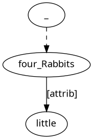Mr. McGregor's garden
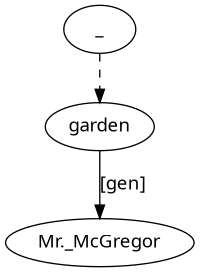twenty years later

very big
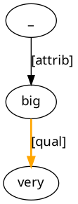| label | description |
| [arg0] | logical subject |
| [arg1] | logical direct object |
| [arg2] | logical indirect object |
| [prd] | predicative |
Baroness Burdet Coutts founded the village.
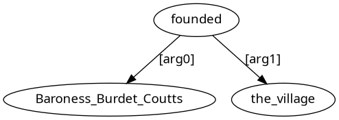The village was founded by Baroness Burdet Coutts.
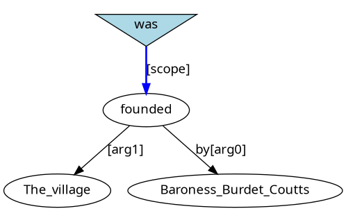He was put in a pie.
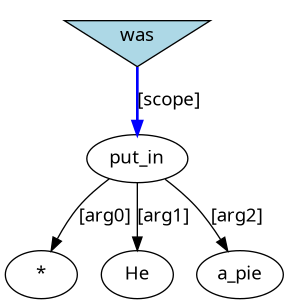Peter asked her the way.
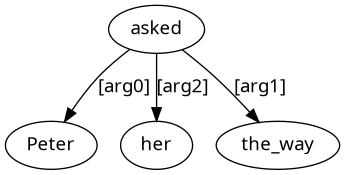It was a hoax.
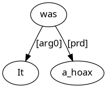I find this interesting.
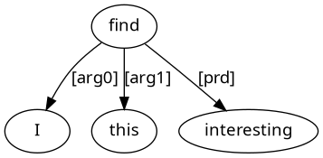| label | description |
| [clr] | closely related, obligatory function |
| [nim] | not important, non-obligatory adverbial function |
They went to late-night movies, and then on_to parties.
They went to late-night movies, and then they went on_to parties.
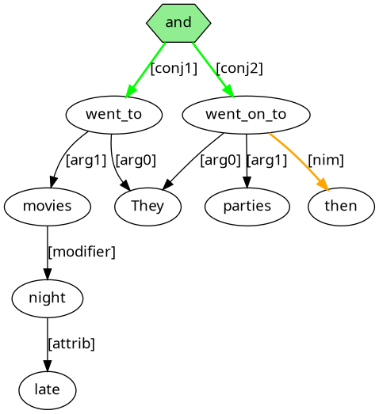He was safe in the wood.
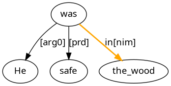| label | description |
| [rfl] | reflexive |
| [voc] | vocative |
The 1401 does the work itself.
what's up El?
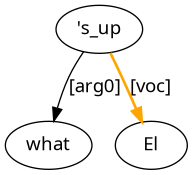| label | description |
| [emb] | embedding |
the idea to go
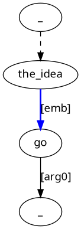| label | description |
| [conjn] | n-th conjunct |
| [partn] | n-th utterance part |
| [utterance] | utterance |
Janet was praised by Rodney, criticized by Sidney and ignored by Gregory.
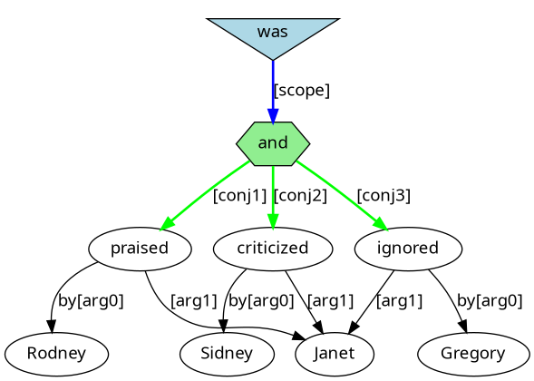He said “Beware! His eyes flash!”
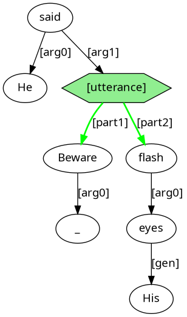| label | description |
| [quant] | quantification |
| [restriction] | restriction of an operation |
| [scope] | scope of an operation |
Merchandise orders came from every client.
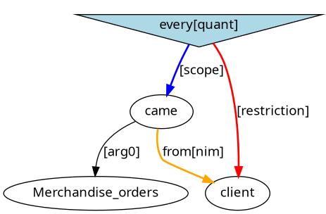A player wins if they reach the mousehole.
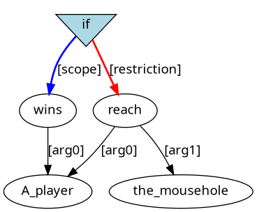